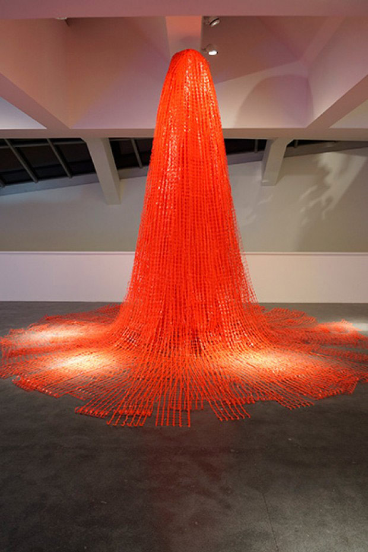
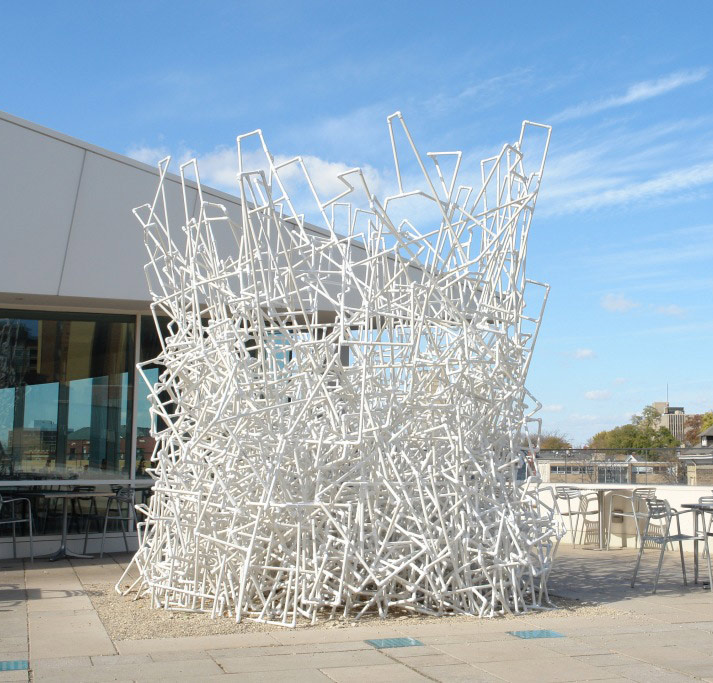

Jason S. Yi
With a myriad of influences, Jason S. Yi, is more than just a visual artist with an architectural background. He is a multi-disciplinary artist, with interests in photography, video, multi-media and installation. A Mary Nohl recipient and former Milwaukee Artist of the Year, Yi is leaving his carbon footprint in the art world by sparking a commentary on humanity in relation to natural environments and built environments through his large scale sculptures.
Yi has mastered the art of architecture. His sculptures are grand, create a stillness in the room. Yi lives, works and teaches in Milwaukee, but he has created and shown all over the world. It’s no wonder his work deals heavily with nature, culture and the history of place.
amfm: How long have you been making art? How long have you been teaching?
Jason S. Yi: My father was an artist, so I grew up watching him paint. Although there were no “father to son” art lessons, I began drawing at an early age.
I suppose there was the influence of constantly being surrounded by art processes and materials. My formal and serious introduction into art was in college. I was studying architecture at Virginia Tech, but was fascinated with the immediacy of art. Art could be produced more quickly and spontaneously, perhaps unlike architecture, which requires a higher level of patience and deliberateness. Attending graduate school at University of Georgia (Athens) was when I decided to immerse myself fully in art. Teaching began in graduate school and still continues presently, which makes 17 total years of teaching.
amfm: How much of architecture practices influence your work? Do you think or created as architect or as a sculptor? Can you separate the two?
yi: In my early career as an artist, I considered the two disciplines as separate entities. My approach to making art was quite different than my engagement with architecture. In hindsight, that was a totally the wrong approach, and I am very cognizant of the artistic influence of my academic and professional architecture experience. With this understanding, I create without defining my practice in “neat” categories like architecture, sculpture, and photography. Melding of instinct and thoughtful deliberation (research) are evident if someone was to walk into my studio.
amfm: With your sculptures, how much planning goes into making a piece? Do you think it up first, then draw it out, build a model and then implement it, sort of like the planning of a building, or is it very hands on, trial and error?
yi: My methodologies vary greatly between works. I make an effort to undermine my own artistic sensibilities and notions of how ideas should develop. Art should be about challenging yourself and the audience. I enjoy stretching our expectations both visually and conceptually and audiences become participants in the ensuing dialogue. With larger sculptural pieces, I usually draw out rough sketches and quickly go into more hands on experiments of building models or material explorations. For drawings and other media, I work more instinctively and work from what is in my head, but there is still a tremendous amount of experiments in everything that I create.
amfm: Why have you chosen to design sculptures over buildings? Which studies came first? How did your art background lend itself to architecture and vise versa?
yi: First and foremost, I love the freedom and the sole accountability of art at least within my studio practice. The idea of collaboration is big within the art world and I employ that in my studio, but in the end you have to stand behind your creation and be willing to open yourself up to criticism. Also, making art is often an intimate and personal process. I don’t know if I can say that with the field of architecture. There is a distinction I am making with the word “field” because as I have said before philosophical core of architecture is critical in my practice.
amfm: Your work is very dramatic, large scale and are powerful pieces that not only take over a room in size and stature but also in a grandeur sense. Where do you find your inspiration? Is there a larger conversation happening in the creation of your pieces?
yi: Artist Ed Rusha used the words “sweetness of scenery.” With the scale, I want to play with romantic notions of landscape. The awesome grandeur of mountains are ultimately depicted by very humble materials, like recycled wood and tape. The contradictions become more apparent as the viewer spends more time with the work. So the viewer’s experience with the work changes from recognition of romantic landscape forms, to employment of ordinary materials and thus begins to formulate questions, which attempt to connect the two disparate ideas.amfm: What is "that hallow feeling" and how does the sculpture emulate that to you? Are mountains a motif for you? If so, why?
yi: “That Hallow Feeling” refers to ultimate feeling of unfulfillment. One can take certain pleasure in seeing the aesthetics of the work, but what it stands for is quite depressing. Orange plastic fencing is an inadequate replacement for the mountain it is trying to represent. There is a contradictory symbolism where the viewer could simultaneously see the beautiful landscape as well as an orange cone, which usually functions as cautionary signage. So either the work tries to pull the viewer in, or warn to keep distance.
amfm: As a multidisciplinary artist, you aren't pigeonholed to one area of study. For instance, you also take photos and do video also, how is it working with so many media? Are they ever intertwined? Do you find yourself able to explore different interests or themes through these different platforms?
yi: This goes back to freedom of art and I consider myself a visual artist and not get caught up in defining what I do disciplinarily. Mostly Ideas come first, and then the media and they are always intertwined. Although they may not visually manifest in the work, for each project there is a mindset of utilizing specific aspects of various media to help me clarify my concept. For example, I could be leaning towards three-dimensional outcome to the work, but I would also consider how it could be created photographically. This can provide further insight into conceptual and visual aspects of the work I would probably would not have considered if I was solely thinking three dimensionally.
amfm: You have done a fair number of installations. do you construct them on site? is there a possibility of transporting from one venue to another? Can you build the same thing twice? If "Terraforum" were to be commissioned to be installed somewhere else, would that be possible?
yi: The site-specific sculptural forms will never take the same form more than once. There can be a variation dictated by the space the work is occupying. This is where my architecture background is most evident. I am compelled to consider the space and imagine the work to be the nucleus of a larger architectural environment somebody else designed.
amfm: Your work has been displayed all over the world. Why did you come, and stay in Milwaukee?
yi: My position at Milwaukee Institute of Art & Design is the reason why I came to the Midwest from the East Coast. I never looked back on moving to Milwaukee. Many people both in and outside of Milwaukee do not realize how much of a vibrant art community exists here. There is great contemporary art scene here. I just became a co-director of a new contemporary art space called “The Pitch Project.” While we are still in the beginning stages of programming, we are quite ambitious about the type of exhibitions that will be hosted here. The Pitch Project also has studios where many of Milwaukee’s noteworthy artists have set up their studio practice. It is important to note that The Pitch Project is not a co-op or vanity gallery. We are intent on exhibiting interesting and challenging works from all over the world.
amfm: What is the one thing you hope to impart to your students about art, or being an artist? Prepare them for life after MIAD..
yi: Be confident and have some serious fun. I think the younger artists stress too much and get trapped into thinking that they are making work for grades. This is absolutely the wrong approach. I am all for having fun and being playful with ideas. Some artists will take this the literal way, which is also very misguided. I love to see commitment to their practice in artists. They may not make the kind of work I am drawn to, but if there is an evidence of unconditional commitment to their work, they have my respect.
amfm: How is the art culture of Milwaukee for an artist? A seasoned artist versus an aspiring artist?
yi: Milwaukee is an ideal place for aspiring artists with a great combination of affordability, supportive art community and plenty of empty space to show work. If they have the aspiration, they can make things happen in Milwaukee. I have a couple of younger artists working in my studio, and I love their energy and enthusiasm and their sense of collaboration.
|  |  |
For more on Jason Yi:
photo credits: ciera mckissick, jason yi, mmoca.org